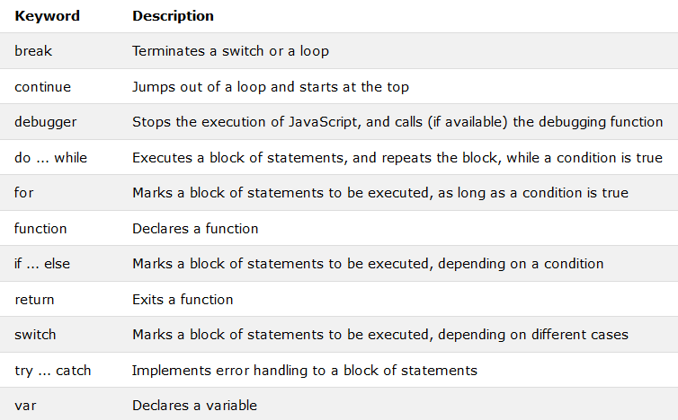

Statements
BCD!!! In all scripting languages like:
1) Python
2) Shell Scripting
3) JavaScript
There are no data types.
Only in JavaScript variables are declared.
JavaScript Programs
A computer program is a list of "instructions" to be "executed" by a computer.
In a programming language, these programming instructions are called statements.
A JavaScript program is a list of programming statements.
In HTML, JavaScript programs are executed by the web browser.
JavaScript Statements
JavaScript statements are composed of:
Values, Operators, Expressions, Keywords, and Comments.
Most JavaScript programs contain many JavaScript statements.
The statements are executed, one by one, in the same order as they are written.
JavaScript programs (and JavaScript statements) are often called JavaScript code.
Semicolons ;
Semicolons separate JavaScript statements.
Add a semicolon at the end of each executable statement
When separated by semicolons, multiple statements on one line are allowedOn the web, you might see examples without semicolons.
Ending statements with semicolon is not required, but highly recommended.
JavaScript White Space
JavaScript ignores multiple spaces. You can add white space to your script to make it more readable
JavaScript Line Length and Line Breaks
For best readability, programmers often like to avoid code lines longer than 80 characters.
If a JavaScript statement does not fit on one line, the best place to break it is after an operator
JavaScript Code Blocks
JavaScript statements can be grouped together in code blocks, inside curly brackets {...}.
The purpose of code blocks is to define statements to be executed together.
One place you will find statements grouped together in blocks, is in JavaScript functions
JavaScript Keywords
JavaScript statements often start with a keyword to identify the JavaScript action to be performed
JavaScript keywords are reserved words. Reserved words cannot be used as names for variables.
